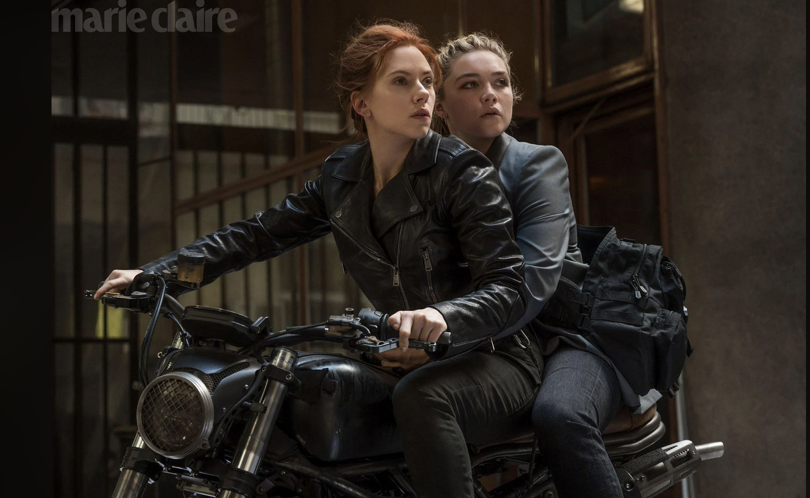
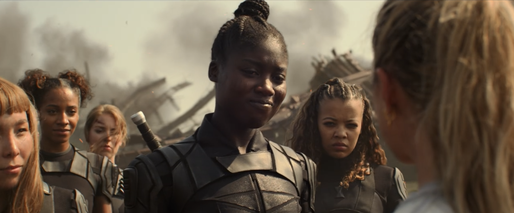

Super Hero Spy Film

Fig.1. Natasha Romanoff and Yelena Belova (Black Widow (dir. Kate Shortland 2021)).
Natasha is trained in Red Room as a KGB assassin Black Widow and is recrutied later into the S.H.I.E.L.D. She is a founding member of the Avengers team.

Fig.2. The utopian feminist community at the end of Black Widow (dir. Kate Shortland 2021).